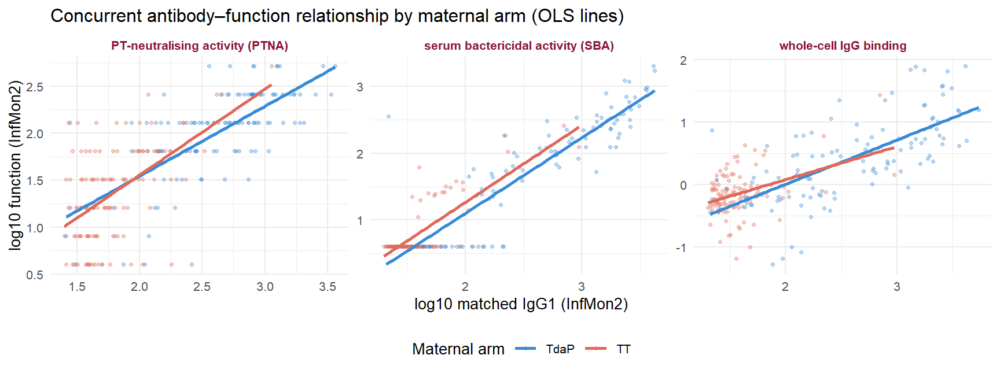
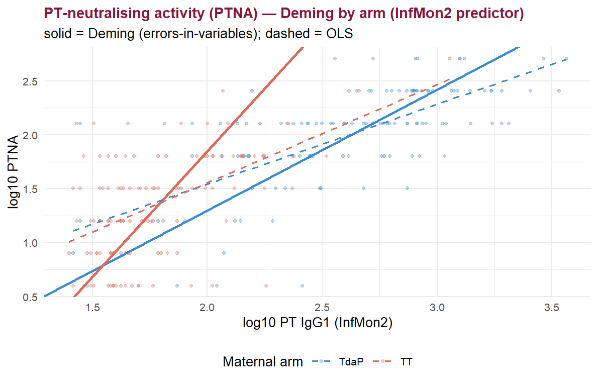
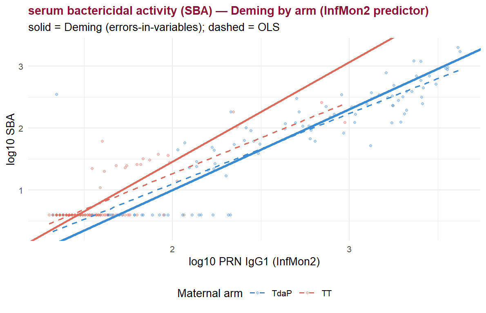
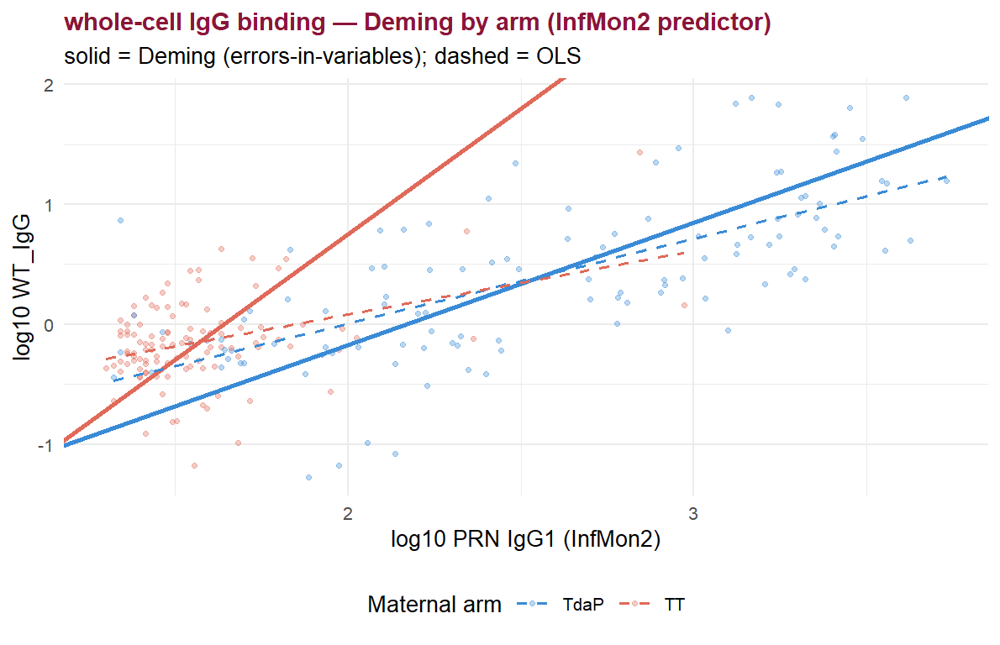
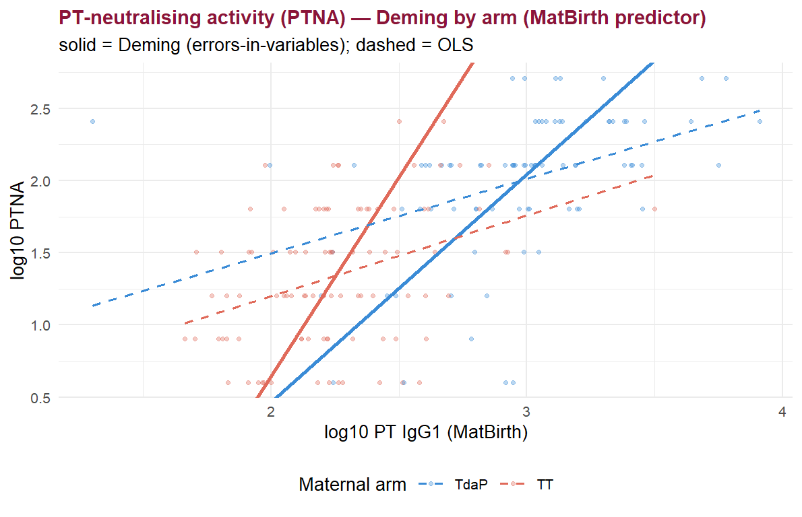
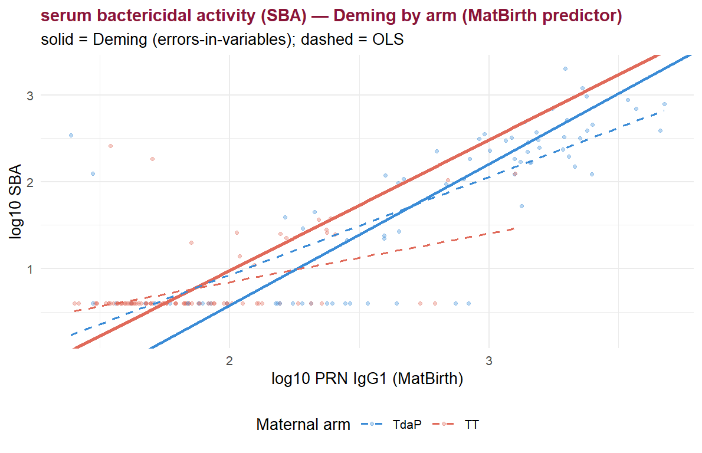
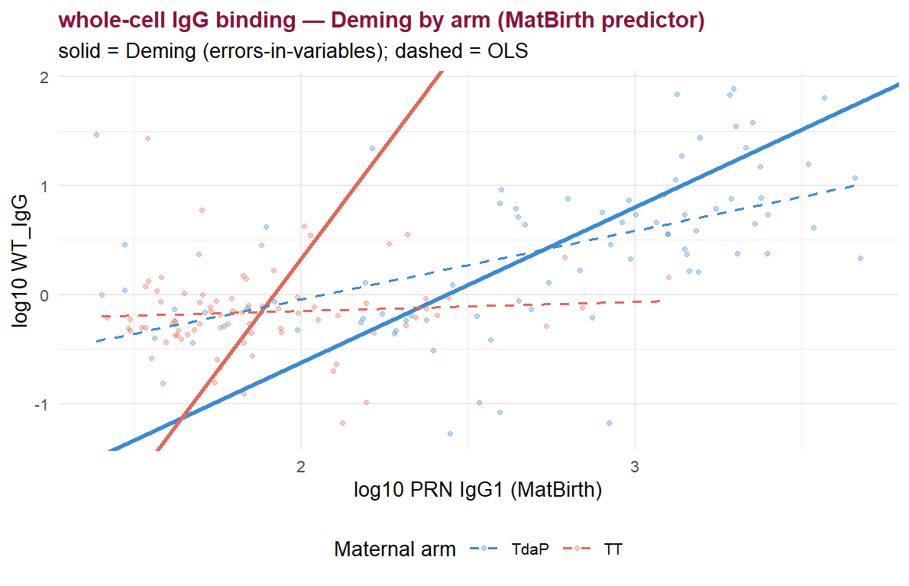

These two analyses formalise the section-D claim. Section D shows the expanded maternal model fits better after Tdap-IPV (e.g. SBA R² 68.7% vs 17.9%), but a difference in variance explained can arise from a different slope, a different predictor range (TT mothers have little PRN to transfer, so a restricted x-range deflates R² even at an identical slope), or different residual scatter. To separate these we fit:
function ~ maternal group * matched antibody + maternal age,
standardised, so the group × antibody term tests directly
whether the antibody–function slope differs by maternal
background. We run this for the matched IgG1 predictor
at two visits: maternal delivery (MatBirth — the
section-D predictor) and concurrent infant (InfMon2 —
the section-E predictor).Matched antibody–function pairs (the dominant correlates identified earlier): PT IgG1 ↔︎ PTNA, PRN IgG1 ↔︎ SBA, PRN IgG1 ↔︎ whole-cell IgG binding.
PAIRS <- list(
list(key="PTNA", outcome="WHOLE_PTNA", antigen="PT", fn="PT-neutralising activity (PTNA)"),
list(key="SBA", outcome="WHOLE_SBA", antigen="PRN", fn="serum bactericidal activity (SBA)"),
list(key="WT_IgG", outcome="WHOLE_WT_IgG", antigen="PRN", fn="whole-cell IgG binding")
)
PRED_ANALYTE <- "IgG1" # matched-subclass predictor (change to "IgG" to reconcile with table-2 totals)
PRED_ANALYTES <- c("IgG", "IgG1") # requirement #6: compare total IgG vs IgG1
# side-by-side in the slope tables (IgG+IgG1
# joint model lives in 06 Family 4).
## case-insensitive feature resolver (guards the IgG/IGG casing issue)
.avail <- as.character(unique(data_raw$feature))
resolve_feat <- function(w) { hit <- .avail[toupper(.avail) == toupper(w)]; if (length(hit)) hit[[1]] else NA_character_ }
## Build a one-row-per-subject frame: x = predictor antibody at pred_visit,
## y = whole-cell function at outcome_visit, + maternal arm + maternal age.
build_pair <- function(outcome_feat, pred_feat, pred_visit, outcome_visit = "InfMon2") {
of <- resolve_feat(outcome_feat); pf <- resolve_feat(pred_feat)
if (is.na(of) || is.na(pf)) return(NULL)
d <- data_raw %>%
dplyr::filter(feature %in% c(of, pf),
visit_name %in% c(pred_visit, outcome_visit),
as.character(arm_name) %in% MATERNAL_ARMS) %>%
dplyr::mutate(key = paste(feature, visit_name, sep = "@")) %>%
dplyr::distinct(subject_accession, arm_name, key, .keep_all = TRUE) %>%
dplyr::select(subject_accession, arm_name, key, log_assay_value) %>%
tidyr::pivot_wider(names_from = key, values_from = log_assay_value,
values_fn = function(z) mean(z, na.rm = TRUE))
xcol <- paste(pf, pred_visit, sep = "@"); ycol <- paste(of, outcome_visit, sep = "@")
if (!all(c(xcol, ycol) %in% names(d))) return(NULL)
tibble::tibble(subject_accession = d$subject_accession,
arm = factor(as.character(d$arm_name), levels = MATERNAL_ARMS),
x = d[[xcol]], y = d[[ycol]]) %>%
dplyr::left_join(clin_age, by = "subject_accession") %>%
dplyr::filter(is.finite(x), is.finite(y))
}## Standardised interaction model: function ~ arm * antibody + maternal age.
## Returns the group x antibody coefficient (difference in standardised slope,
## TdaP minus TT), each arm's simple slope, and model fit.
fit_interaction <- function(df) {
d <- df %>% dplyr::filter(is.finite(x), is.finite(y), is.finite(maternal_age))
if (nrow(d) < 30 || dplyr::n_distinct(d$arm) < 2) return(NULL)
d$zx <- as.numeric(scale(d$x)); d$zy <- as.numeric(scale(d$y))
d$za <- as.numeric(scale(d$maternal_age))
d$arm <- relevel(factor(d$arm), ref = "TT") # TT = comparator
m <- lm(zy ~ arm * zx + za, data = d)
co <- summary(m)$coefficients
it <- grep("(armTdaP:zx|zx:armTdaP)", rownames(co), value = TRUE)[1]
ci <- suppressMessages(confint(m))
slope_TT <- co["zx", "Estimate"]
slope_TdaP <- slope_TT + co[it, "Estimate"]
# Type III test for the interaction (single df -> equals the t-test); use car if available
p_int <- co[it, "Pr(>|t|)"]
if (has_car) {
a3 <- tryCatch(car::Anova(m, type = 3), error = function(e) NULL)
if (!is.null(a3) && "arm:zx" %in% rownames(a3)) p_int <- a3["arm:zx", "Pr(>F)"]
}
data.frame(n = nrow(d),
slope_TT = round(slope_TT, 3), slope_TdaP = round(slope_TdaP, 3),
int_diff = round(co[it, "Estimate"], 3),
ci_lo = round(ci[it, 1], 3), ci_hi = round(ci[it, 2], 3),
p_interaction = signif(p_int, 3),
adjR2 = round(summary(m)$adj.r.squared, 3))
}
run_interaction_set <- function(pred_visit, analytes = PRED_ANALYTES) {
rows <- list()
for (an in analytes) for (p in PAIRS) {
df <- build_pair(p$outcome, paste0(p$antigen, "_", an), pred_visit)
if (is.null(df)) next
f <- fit_interaction(df)
if (is.null(f)) next
rows[[length(rows) + 1]] <- cbind(
Outcome = p$fn,
Predictor = paste0(p$antigen, " ", an, " @ ", pred_visit), f)
}
do.call(rbind, rows)
}int_mat <- run_interaction_set("MatBirth")
kable(int_mat, row.names = FALSE,
col.names = c("Infant outcome", "Predictor", "n",
"slope (TT)", "slope (TdaP)", "Δslope (TdaP−TT)",
"95% CI low", "95% CI high", "p (interaction)", "adj R²"),
caption = "Table 1a. Standardised maternal-group × maternal-delivery IgG / IgG1 interaction. Slopes are standardised (per SD of antibody, in SD of function). A significant Δslope means the maternal antibody–infant function slope differs by maternal vaccine group; a non-significant Δslope means the section-D R² gap is better explained by predictor range / residual variance than by a slope difference.")| Infant outcome | Predictor | n | slope (TT) | slope (TdaP) | Δslope (TdaP−TT) | 95% CI low | 95% CI high | p (interaction) | adj R² |
|---|---|---|---|---|---|---|---|---|---|
| PT-neutralising activity (PTNA) | PT IgG @ MatBirth | 209 | 0.508 | 0.563 | 0.056 | -0.228 | 0.339 | 7.00e-01 | 0.459 |
| serum bactericidal activity (SBA) | PRN IgG @ MatBirth | 194 | 0.322 | 1.003 | 0.682 | 0.440 | 0.923 | 1.00e-07 | 0.683 |
| whole-cell IgG binding | PRN IgG @ MatBirth | 195 | 0.070 | 0.739 | 0.669 | 0.333 | 1.005 | 1.22e-04 | 0.395 |
| PT-neutralising activity (PTNA) | PT IgG1 @ MatBirth | 177 | 0.474 | 0.450 | -0.024 | -0.345 | 0.298 | 8.86e-01 | 0.434 |
| serum bactericidal activity (SBA) | PRN IgG1 @ MatBirth | 166 | 0.421 | 0.856 | 0.435 | 0.170 | 0.700 | 1.43e-03 | 0.677 |
| whole-cell IgG binding | PRN IgG1 @ MatBirth | 162 | 0.062 | 0.589 | 0.527 | 0.149 | 0.904 | 6.57e-03 | 0.374 |
int_inf <- run_interaction_set("InfMon2")
kable(int_inf, row.names = FALSE,
col.names = c("Infant outcome", "Predictor", "n",
"slope (TT)", "slope (TdaP)", "Δslope (TdaP−TT)",
"95% CI low", "95% CI high", "p (interaction)", "adj R²"),
caption = "Table 1b. Standardised maternal-group × concurrent (InfMon2) infant IgG / IgG1 interaction — whether the same-sample antibody→function slope in the infant differs by maternal background.")| Infant outcome | Predictor | n | slope (TT) | slope (TdaP) | Δslope (TdaP−TT) | 95% CI low | 95% CI high | p (interaction) | adj R² |
|---|---|---|---|---|---|---|---|---|---|
| PT-neutralising activity (PTNA) | PT IgG @ InfMon2 | 237 | 0.473 | 0.875 | 0.402 | 0.123 | 0.681 | 4.91e-03 | 0.506 |
| serum bactericidal activity (SBA) | PRN IgG @ InfMon2 | 220 | 0.439 | 1.317 | 0.878 | 0.720 | 1.036 | 0.00e+00 | 0.843 |
| whole-cell IgG binding | PRN IgG @ InfMon2 | 223 | 0.252 | 0.996 | 0.745 | 0.468 | 1.021 | 3.00e-07 | 0.501 |
| PT-neutralising activity (PTNA) | PT IgG1 @ InfMon2 | 237 | 0.870 | 0.703 | -0.167 | -0.437 | 0.103 | 2.25e-01 | 0.572 |
| serum bactericidal activity (SBA) | PRN IgG1 @ InfMon2 | 220 | 1.011 | 0.999 | -0.012 | -0.217 | 0.193 | 9.10e-01 | 0.850 |
| whole-cell IgG binding | PRN IgG1 @ InfMon2 | 223 | 0.615 | 0.814 | 0.199 | -0.175 | 0.574 | 2.95e-01 | 0.526 |
## visualise the InfMon2 (concurrent) simple slopes
plot_df <- do.call(rbind, lapply(PAIRS, function(p) {
df <- build_pair(p$outcome, paste0(p$antigen, "_", PRED_ANALYTE), "InfMon2")
if (is.null(df)) return(NULL)
d <- df %>% filter(is.finite(x), is.finite(y))
d$Outcome <- p$fn; d
}))
ggplot(plot_df, aes(x, y, colour = arm)) +
geom_point(alpha = .35, size = 1) +
geom_smooth(method = "lm", se = FALSE, linewidth = 1) +
facet_wrap(~ Outcome, scales = "free", nrow = 1) +
scale_colour_manual(values = MARM_COL, name = "Maternal arm") +
labs(x = paste0("log10 matched ", PRED_ANALYTE, " (InfMon2)"), y = "log10 function (InfMon2)",
title = "Concurrent antibody–function relationship by maternal arm (OLS lines)") +
theme_minimal(base_size = 10) +
theme(legend.position = "bottom", strip.text = element_text(face = "bold", colour = ACCENT))
## Closed-form Deming slope/intercept for a given error-variance ratio lambda.
deming_fit <- function(x, y, lambda = 1) {
ok <- is.finite(x) & is.finite(y); x <- x[ok]; y <- y[ok]; n <- length(x)
if (n < 5) return(c(intercept = NA, slope = NA, n = n))
mx <- mean(x); my <- mean(y)
sxx <- sum((x - mx)^2) / (n - 1); syy <- sum((y - my)^2) / (n - 1)
sxy <- sum((x - mx) * (y - my)) / (n - 1)
b <- ((syy - lambda * sxx) + sqrt((syy - lambda * sxx)^2 + 4 * lambda * sxy^2)) / (2 * sxy)
c(intercept = my - b * mx, slope = b, n = n)
}
## Per-arm Deming with stratified bootstrap CIs and a slope-difference test.
deming_by_arm <- function(df, lambda = 1, B = 2000, seed = 1) {
set.seed(seed)
arms <- MATERNAL_ARMS
d <- df %>% filter(is.finite(x), is.finite(y))
obs <- lapply(arms, function(a) deming_fit(d$x[d$arm == a], d$y[d$arm == a], lambda))
names(obs) <- arms
diff_obs <- unname(obs[[1]]["slope"] - obs[[2]]["slope"])
bs <- matrix(NA_real_, B, length(arms), dimnames = list(NULL, arms))
for (b in seq_len(B)) for (a in arms) {
da <- d[d$arm == a, ]; idx <- sample(nrow(da), replace = TRUE)
bs[b, a] <- deming_fit(da$x[idx], da$y[idx], lambda)["slope"]
}
diffs <- bs[, arms[1]] - bs[, arms[2]]
q <- function(v) round(stats::quantile(v, c(.025, .975), na.rm = TRUE), 3)
list(obs = obs, diff_obs = diff_obs,
ci = lapply(arms, function(a) q(bs[, a])),
ci_diff = q(diffs),
p_diff = round(2 * min(mean(diffs <= 0, na.rm = TRUE), mean(diffs >= 0, na.rm = TRUE)), 4))
}
run_deming_set <- function(pred_visit, analytes = PRED_ANALYTES, plot_analyte = "IgG1") {
res <- list(); rows <- list()
for (an in analytes) for (p in PAIRS) {
df <- build_pair(p$outcome, paste0(p$antigen, "_", an), pred_visit)
if (is.null(df)) next
r <- deming_by_arm(df, lambda = params$lambda, B = params$boot_B, seed = params$seed)
if (identical(an, plot_analyte)) res[[p$key]] <- list(df = df, r = r, p = p)
rows[[paste(p$key, an)]] <- data.frame(
Outcome = p$fn, Predictor = paste0(p$antigen, " ", an, " @ ", pred_visit),
n_TdaP = unname(r$obs$TdaP["n"]), n_TT = unname(r$obs$TT["n"]),
slope_TdaP = round(unname(r$obs$TdaP["slope"]), 3),
ci_TdaP = paste0("[", r$ci[[1]][1], ", ", r$ci[[1]][2], "]"),
slope_TT = round(unname(r$obs$TT["slope"]), 3),
ci_TT = paste0("[", r$ci[[2]][1], ", ", r$ci[[2]][2], "]"),
slope_diff = round(r$diff_obs, 3),
ci_diff = paste0("[", r$ci_diff[1], ", ", r$ci_diff[2], "]"),
p_diff = r$p_diff)
}
list(table = do.call(rbind, rows), res = res)
}
deming_plot <- function(set, pred_visit) {
for (k in names(set$res)) {
o <- set$res[[k]]; r <- o$r; d <- o$df %>% filter(is.finite(x), is.finite(y))
g <- ggplot(d, aes(x, y, colour = arm)) +
geom_point(alpha = .35, size = 1) +
geom_abline(intercept = r$obs$TdaP["intercept"], slope = r$obs$TdaP["slope"],
colour = MARM_COL["TdaP"], linewidth = 1) +
geom_abline(intercept = r$obs$TT["intercept"], slope = r$obs$TT["slope"],
colour = MARM_COL["TT"], linewidth = 1) +
geom_smooth(aes(group = arm), method = "lm", se = FALSE, linetype = "dashed",
linewidth = .6, alpha = .7) +
scale_colour_manual(values = MARM_COL, name = "Maternal arm") +
labs(title = paste0(o$p$fn, " — Deming by arm (", pred_visit, " predictor)"),
subtitle = "solid = Deming (errors-in-variables); dashed = OLS",
x = paste0("log10 ", o$p$antigen, " ", PRED_ANALYTE, " (", pred_visit, ")"),
y = paste0("log10 ", o$p$key)) +
theme_minimal(base_size = 10) +
theme(legend.position = "bottom", plot.title = element_text(face = "bold", colour = ACCENT, size = 11))
print(g)
}
}dem_inf <- run_deming_set("InfMon2")
kable(dem_inf$table, row.names = FALSE,
col.names = c("Outcome", "Predictor", "n (TdaP)", "n (TT)",
"slope TdaP", "95% CI", "slope TT", "95% CI",
"Δslope", "95% CI", "p (diff)"),
caption = sprintf("Table 2a. Deming regression (λ = %s) of concurrent infant function on matched infant IgG and IgG1, fitted within each maternal arm. Δslope and its bootstrap CI/p test whether the error-corrected antibody→function slope differs by maternal background.", params$lambda))| Outcome | Predictor | n (TdaP) | n (TT) | slope TdaP | 95% CI | slope TT | 95% CI | Δslope | 95% CI | p (diff) |
|---|---|---|---|---|---|---|---|---|---|---|
| PT-neutralising activity (PTNA) | PT IgG @ InfMon2 | 116 | 121 | 1.092 | [0.752, 1.692] | 0.705 | [0.431, 0.972] | 0.387 | [-0.05, 1.043] | 0.088 |
| serum bactericidal activity (SBA) | PRN IgG @ InfMon2 | 105 | 117 | 1.043 | [0.959, 1.138] | 0.401 | [0.237, 0.55] | 0.642 | [0.468, 0.833] | 0.000 |
| whole-cell IgG binding | PRN IgG @ InfMon2 | 114 | 109 | 0.761 | [0.604, 0.955] | 0.189 | [0.049, 0.354] | 0.572 | [0.349, 0.802] | 0.000 |
| PT-neutralising activity (PTNA) | PT IgG1 @ InfMon2 | 116 | 121 | 1.122 | [0.868, 1.403] | 2.333 | [1.771, 3.646] | -1.211 | [-2.572, -0.592] | 0.000 |
| serum bactericidal activity (SBA) | PRN IgG1 @ InfMon2 | 104 | 117 | 1.303 | [1.215, 1.402] | 1.604 | [1.294, 2.282] | -0.301 | [-1.011, 0.017] | 0.073 |
| whole-cell IgG binding | PRN IgG1 @ InfMon2 | 114 | 109 | 1.021 | [0.834, 1.248] | 2.094 | [1.042, 9.713] | -1.073 | [-8.679, 0.003] | 0.052 |
deming_plot(dem_inf, "InfMon2")


dem_mat <- run_deming_set("MatBirth")
kable(dem_mat$table, row.names = FALSE,
col.names = c("Outcome", "Predictor", "n (TdaP)", "n (TT)",
"slope TdaP", "95% CI", "slope TT", "95% CI",
"Δslope", "95% CI", "p (diff)"),
caption = sprintf("Table 2b. Deming regression (λ = %s) of infant function (InfMon2) on maternal-delivery IgG1 (MatBirth), within each maternal arm. Use this to reconcile the slope with the maternal-model coefficients in table 2.", params$lambda))| Outcome | Predictor | n (TdaP) | n (TT) | slope TdaP | 95% CI | slope TT | 95% CI | Δslope | 95% CI | p (diff) |
|---|---|---|---|---|---|---|---|---|---|---|
| PT-neutralising activity (PTNA) | PT IgG @ MatBirth | 96 | 113 | 0.779 | [0.459, 1.635] | 0.692 | [0.464, 0.974] | 0.086 | [-0.356, 0.974] | 0.695 |
| serum bactericidal activity (SBA) | PRN IgG @ MatBirth | 86 | 109 | 0.958 | [0.799, 1.122] | 0.380 | [0.15, 0.574] | 0.579 | [0.335, 0.858] | 0.001 |
| whole-cell IgG binding | PRN IgG @ MatBirth | 94 | 101 | 0.642 | [0.425, 0.864] | 0.086 | [-0.176, 0.251] | 0.557 | [0.281, 0.905] | 0.001 |
| PT-neutralising activity (PTNA) | PT IgG1 @ MatBirth | 82 | 95 | 1.579 | [0.676, 2.626] | 2.760 | [1.641, 5.556] | -1.182 | [-4.032, 0.355] | 0.133 |
| serum bactericidal activity (SBA) | PRN IgG1 @ MatBirth | 76 | 90 | 1.627 | [1.427, 1.91] | 1.505 | [0.745, 4.818] | 0.122 | [-3.192, 0.934] | 0.768 |
| whole-cell IgG binding | PRN IgG1 @ MatBirth | 80 | 82 | 1.427 | [1.013, 2.093] | 4.086 | [-56.847, 46.497] | -2.660 | [-45.179, 58.254] | 0.937 |
deming_plot(dem_mat, "MatBirth")


get_row <- function(tab, fn, col) {
if (is.null(tab) || !"Outcome" %in% names(tab)) return(NA)
v <- tab[tab$Outcome == fn, col]; if (length(v)) v[1] else NA
}
out <- do.call(rbind, lapply(PAIRS, function(p) {
data.frame(
Outcome = p$fn,
`Interaction p (MatBirth predictor)` = get_row(int_mat, p$fn, "p_interaction"),
`Interaction p (InfMon2 predictor)` = get_row(int_inf, p$fn, "p_interaction"),
`Deming slope diff (InfMon2)` = get_row(dem_inf$table, p$fn, "slope_diff"),
`Deming p (InfMon2)` = get_row(dem_inf$table, p$fn, "p_diff"),
check.names = FALSE)
}))
kable(out, row.names = FALSE, caption = "Table 3. Combined slope-difference evidence. If interaction p and Deming p are non-significant, section D should remain phrased as a difference in variance explained, not a difference in slope. If significant (especially for the surface outcomes after Tdap-IPV), the antibody-to-function slope itself differs by maternal background and the wording can be strengthened.")| Outcome | Interaction p (MatBirth predictor) | Interaction p (InfMon2 predictor) | Deming slope diff (InfMon2) | Deming p (InfMon2) |
|---|---|---|---|---|
| PT-neutralising activity (PTNA) | 7.00e-01 | 4.91e-03 | 0.387 | 0.088 |
| serum bactericidal activity (SBA) | 1.00e-07 | 0.00e+00 | 0.642 | 0.000 |
| whole-cell IgG binding | 1.22e-04 | 3.00e-07 | 0.572 | 0.000 |
Interpretation.
group × antibody term is the formal test the analyst note
asks for. A non-significant interaction (with a clearly higher per-arm
R² after Tdap-IPV in section D) indicates the section-D gap is driven by
the range and abundance of transferable PRN antibody — there is
more PRN to work with after Tdap-IPV — rather than by a steeper
antibody→function conversion. In that case keep section D as “variance
explained,” as currently written. A significant interaction licenses a
slope-difference statement.## Cross-check: the 'deming' package is available; closed-form slopes above can be verified with deming::deming(y ~ x, data, ...). Not run by default.sessionInfo()## R version 4.5.1 (2025-06-13 ucrt)
## Platform: x86_64-w64-mingw32/x64
## Running under: Windows 11 x64 (build 26100)
##
## Matrix products: default
## LAPACK version 3.12.1
##
## locale:
## [1] LC_COLLATE=English_United States.utf8
## [2] LC_CTYPE=English_United States.utf8
## [3] LC_MONETARY=English_United States.utf8
## [4] LC_NUMERIC=C
## [5] LC_TIME=English_United States.utf8
##
## time zone: America/New_York
## tzcode source: internal
##
## attached base packages:
## [1] grid stats graphics grDevices utils datasets methods
## [8] base
##
## other attached packages:
## [1] relaimpo_2.2-7 mitools_2.4 survey_4.5 survival_3.8-3
## [5] Matrix_1.7-3 boot_1.3-31 MASS_7.3-65 broom_1.0.12
## [9] lubridate_1.9.5 forcats_1.0.1 stringr_1.6.0 purrr_1.2.2
## [13] readr_2.2.0 tibble_3.3.1 tidyverse_2.0.0 here_1.0.2
## [17] knitr_1.51 ggplot2_4.0.3 tidyr_1.3.2 dplyr_1.2.1
##
## loaded via a namespace (and not attached):
## [1] gtable_0.3.6 xfun_0.57 bslib_0.11.0 lattice_0.22-7
## [5] tzdb_0.5.0 vctrs_0.7.3 tools_4.5.1 generics_0.1.4
## [9] pkgconfig_2.0.3 RColorBrewer_1.1-3 S7_0.2.2 lifecycle_1.0.5
## [13] compiler_4.5.1 farver_2.1.2 carData_3.0-6 httpuv_1.6.16
## [17] htmltools_0.5.9 sass_0.4.10 yaml_2.3.12 Formula_1.2-5
## [21] later_1.4.8 pillar_1.11.1 car_3.1-5 jquerylib_0.1.4
## [25] cachem_1.1.0 abind_1.4-8 nlme_3.1-168 tidyselect_1.2.1
## [29] digest_0.6.39 stringi_1.8.7 labeling_0.4.3 splines_4.5.1
## [33] rprojroot_2.1.1 fastmap_1.2.0 cli_3.6.6 magrittr_2.0.5
## [37] corpcor_1.6.10 withr_3.0.2 scales_1.4.0 promises_1.5.0
## [41] backports_1.5.1 timechange_0.4.0 rmarkdown_2.31 otel_0.2.0
## [45] workflowr_1.7.2 hms_1.1.4 evaluate_1.0.5 mgcv_1.9-3
## [49] deming_1.4-1 rlang_1.2.0 Rcpp_1.1.1-1.1 glue_1.8.1
## [53] DBI_1.3.0 rstudioapi_0.18.0 jsonlite_2.0.0 R6_2.6.1
## [57] fs_2.1.0